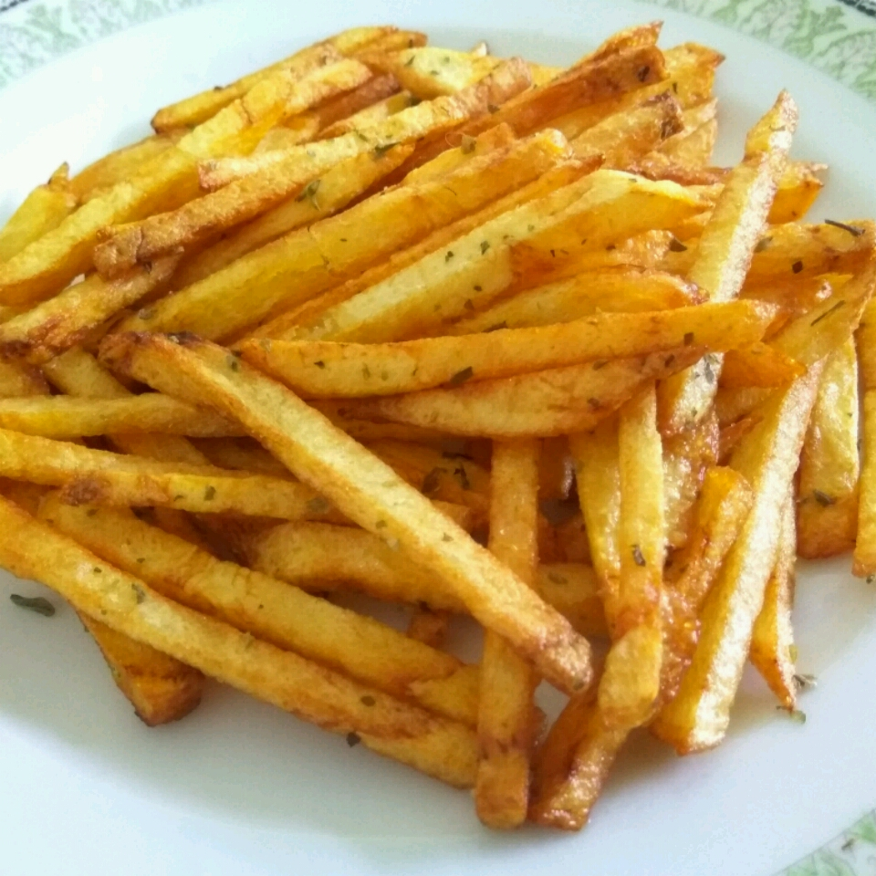

French Fries

Description
Delicious and cruncy fries. Don't forget the salt!
Ingredients
- ⅓ cup white sugar
- 2 cups warm water
- 2 large russet potatoes - peeled, and sliced into 1/4 inch strips
- 6 cups vegetable oil for frying
- salt to taste
Steps
- In a medium bowl, dissolve the sugar in warm water. Soak potatoes in water mixture for 15 minutes. Remove from water, and dry thoroughly on paper towels.
- Heat oil in deep-fryer to 375 degrees F (190 degrees C). Add potatoes, and cook until golden, 5 to 6 minutes. drain on paper towels. Season with salt to taste.
Return to Index